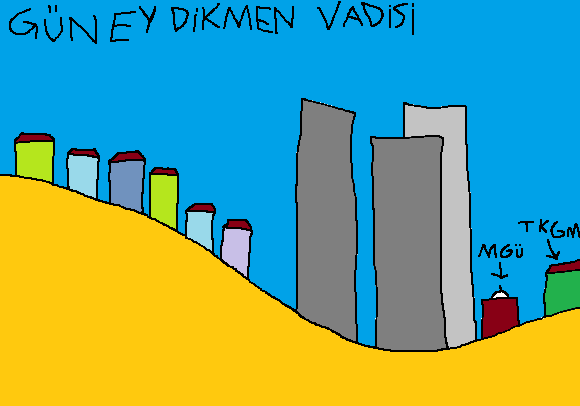

Güney Dikmen Vadisi, kuzey kısmına VadiPark yapıldıktan sonra unutulup terk edilen vadidir. 21. onyılın başında gökdelenler dikilmeye başlanır ve vadi belediye buna nasıl izin veriyor sorgulattırmaya başlar.